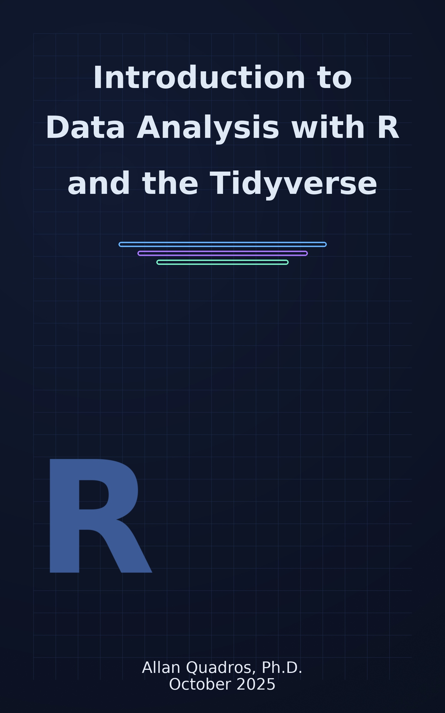

Introduction to Data Analysis with R and the Tidyverse
October 2025
Welcome!

This is the repository for the textbook of the Introduction to Data Analysis in R using Tidyverse course. To reproduce the code present in the book, you need a recent version of R and updated packages. At the beginning of each section, you will be introduced to the packages needed to execute the code related to that topic.
It is highly recommended to use the most recent version of the Integrated Development Environment (IDE) RStudio.
Bugs and typos found in this book can be reported in the its Git repository: https://github.com/allanvc/book_IDART_en/issues/Why R?
The R programming language is known for having a relatively slow learning curve, but once students understand the basic structure of objects that make up the language, learning becomes exponential.
Figure 0.1: R Learning Curve
R is relatively different from other programming languages because it was developed by Statisticians for Statisticians. It wasn’t designed to be the most efficient language in terms of speed, but rather to make the lives of those who analyze data easier. My experience with other programming languages leads me to affirm that this is true: there is no language more suitable for data analysis than R. Individual preferences and other conveniences may lead to choosing one language or another, but there’s no denying the fact that R has the best tools for Data Wrangling (data preparation), graph generation, report generation, and reproducibility.
Furthermore, R is globally recognized for its extremely active and inclusive community. It is the preferred language in academia, given that new mathematical, statistical, and/or computational techniques are implemented first in R. It is also one of the most used languages in industry for Data Science, along with Python.
For these reasons and for being an open source language, endowed with a powerful package management environment, the dissemination of R use in its 20 years of history has been extremely rapid and has relegated data analysis environments and languages like SAS, SPSS, and Stata to second place. In R, you’ll find packages for the most diverse purposes: from packages that generate exams from a question bank, through data preparation packages, mathematical optimization, Machine Learning, to packages for audio analysis, application creation, reading and sending emails.
Today, there are several environments and languages used for Data Analysis, such as Python, Julia, Scala, SAS, etc. However, none of them provide the combination of an excellent package management ecosystem, statistical capabilities, visualization options, and a powerful IDE (Integrated Development Environment) - all implemented by the R community. For all these characteristics, the benefits of learning the R language are truly considerable.
Course Organization
This course is divided into 4 Modules. Module 1 seeks to familiarize students with the basic concepts of the language, covering history, basic functionalities, and the structure of the most important objects in R.
Modules 2 and 3 are always divided into 3 parts: data reading, data manipulation, and visualization. With each Module, new packages are presented for these functionalities, with a slightly deeper level of specialization compared to the previous module.
Module 4 begins with a focus on string manipulation and regular expressions (REGEX) and ends by presenting report production techniques and reproducibility in R.